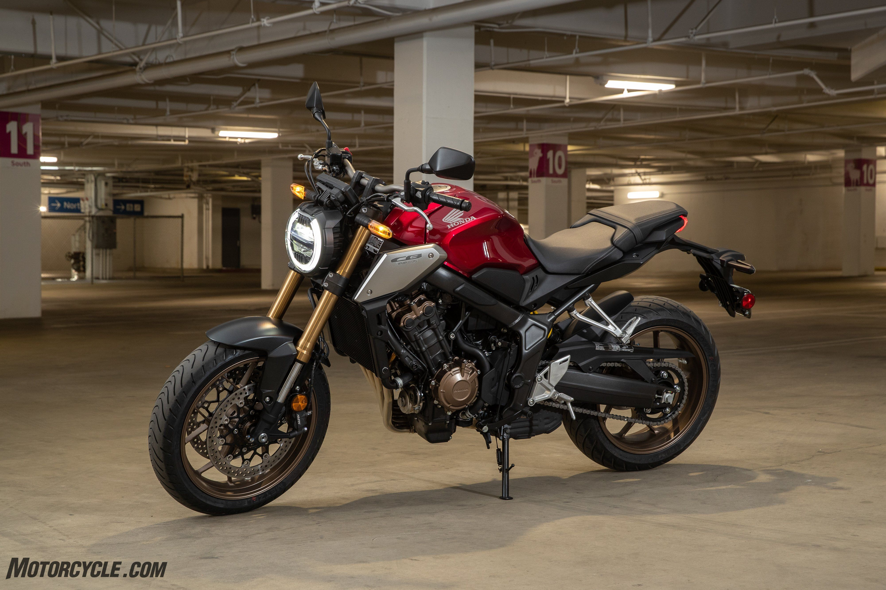

Introduction
Honda has always thrived on exploring new boundaries – in design as well as engineering. In 2018, the CB1000R, CB300R and CB125R brought a fresh identity to its naked motorcycle line-up, mixing café racer inspirations with a forward-looking ultra-minimalist look under the ‘Neo Sports Café’ design theme.
One segment remained for the new aesthetic to find expression: the hugely competitive naked middleweight arena and in 2019, the CB650R confidently took on this role. Aimed at a young demographic that looks to show off in style and enjoy to the maximum a combination of exhilarating four cylinder engine performance and light, versatile, refined chassis handling, it has proved a great success.
Building on the momentum, for 2021 the CB650R receives a major front suspension upgrade, plus a range of detail improvements to enhance comfort, usability and practicality.
Model Overview

The major news of the CB650R’s update is application of 41mm Showa Separate Function Big Piston USD forks* – high quality suspension that further heighten the bike’s handling ability.
EURO5 compliance for the engine has been achieved with no loss of top end power; other improvements include slightly more forward-set handlebars, improved visibility for the LCD display and USB Type-C charging socket under the seat. New side panels and rear mudguard are minor cosmetic changes.
The 2021 CB650R will be available in the following colour options:
- Pearl Smoky Gray **NEW**
- Mat Gunpowder Black Metallic
- Mat Jeans Blue Metallic
- Candy Chromosphere Red
*Full name: Showa Separate Function front Fork Big Piston (SFF-BP)
Key Features
Tightly wrapped and aggressive, the CB650R’s Neo Sports Café style features the signature compact ‘Trapezoid’ proportion of short, stubby tail and short overhang headlight. The long fuel tank is a key motif of the family design; its smooth lines accentuate the solidity of real metal surfaces and crown the engineering of the four cylinder powerplant. It also houses the ignition.
New, smaller side panels accentuate the minimalism, as does the rear mudguard, which is now constructed from steel rather than nylon plastic. There’s also now a USB Type-C socket located under the seat, for easy charging of a mobile device. Seat height remains 810mm.
The round headlight is one of the key words of the Neo Sports Café design language. It’s LED, as is the rest of the lighting. Sharp LCD instruments use the CB1000R as a baseline and include a Shift Up, Gear Position and Peak Hold indicator. For 2021 readability has been improved with a change of LED angle and font size.
Another detail change is an increase in the handlebar angle, up 3° to 35°. This adjustment makes tight, slow-speed turns and U-turns easier.
Engine

The 649cc, DOHC 16-valve engine is tuned to create the purest, most enjoyable mid-sized four cylinder performance possible, with the classically fast ‘pick-up’ through the rev range and hard-hitting, high-revving top end for which Honda’s in-line’s fours are renowned. Peak power of 70kW arrives @ 12,000rpm with peak torque @ 63Nm delivered at 9,500 rpm. An easy 35kW conversion is available for A2 licence holders.
Through the 2021 update the only changes to engine specification are for EURO5 compliance; this has required revisions to the ECU, cam lobes, intake timing, exhaust pipe, catalyser and silencer, as well as the addition of a crank pulsar.
Direct cam actuation makes for a compact cylinder head; bore and stroke is set at 67mm x 46mm with compression ratio raised of 11.6:1. Iridium spark plugs are employed and twin air ducts – either side of the fuel tank – feed the airbox and produce a throaty intake roar.
Asymmetric piston skirts minimise bore contact and reduce friction. Ferrous spines on the outer surface of the cylinder sleeves reduce oil consumption (and friction) with improved heat transfer and a silent SV cam chain reduces frictional losses by using a Vanadium coating on its pins. Internal water channelling from cylinder head to cylinders does away with most of the exterior hoses.
The engine uses a compact internal architecture, stacked six-speed gearbox and starter layout with the cylinders canted forward 30°. An assist/slipper clutch eases upshifts while managing rear-wheel lock up under hard braking and rapid downshifts. Honda Selectable Torque Control (HSTC) is fitted to manage rear wheel traction; it can be turned off should the rider choose.
Fuel consumption of 20.4km/l (WMTC mode) gives a range of over 300km from the 15.4L fuel tank.